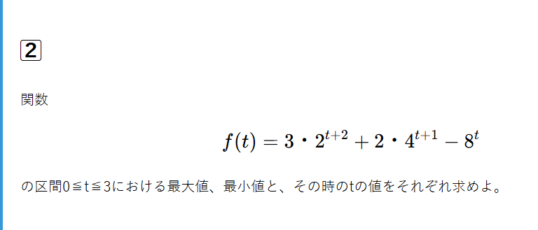
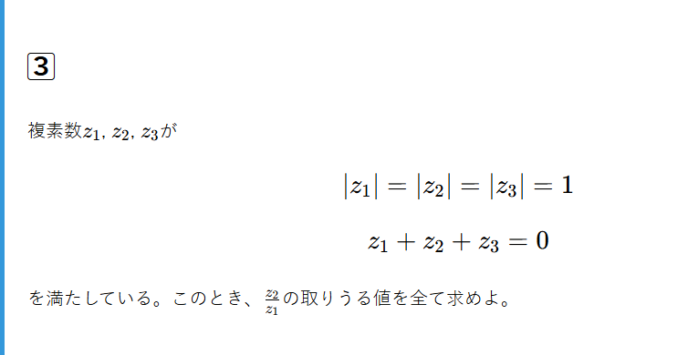
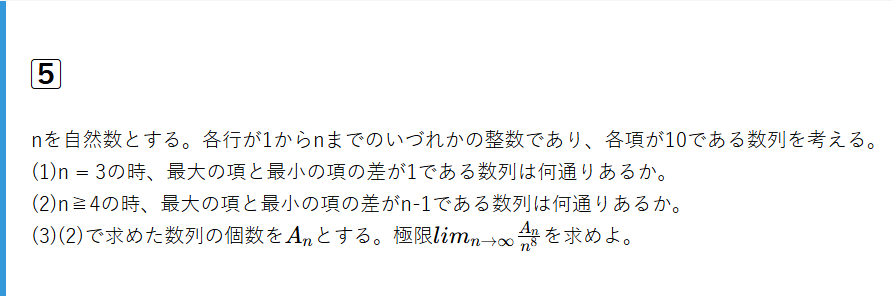

解説する問題
2025年、信州大学理学部の数学を 方針・解説・重要なポイントに分けて完全解説しております。問題は以下の通り。





広告スペース
※以下、解答のネタバレを含みます。
講評
難易度
1⃣ ★★★☆☆
2⃣ ★★☆☆☆
3⃣ ★★★★☆
4⃣ ★★★★☆
5⃣ ★★★★☆
全体難易度 ★★★★☆
問題の評価
1⃣ 標準
四面体の体積比をベクトルを用いて考えていく問題。(1)の直線と平面の交点を考える問題は記述量が多く大変だが頻出であるので慣れておくとよい。
2⃣ 基礎
指数関数の最大最小問題。関数問題の基本を確認するのに適している。得点源なので完答したい。
3⃣ 応用
複素数平面の問題。条件が何を表しているかを読み解けるかが重要。初見ではやや難易度が高い。だが条件が読み解ければ記述量も少なく解きやすいだろう。
4⃣ 標準
微積分の問題。(1)は基本的な問題だが(2)には経験が必要で気づきにくい。
5⃣ 応用
場合の数と極限の問題。パッと方針が立てづらい問題であるが、問題文の意味を読み取ることができれば簡単。(3)はやや気づきにくいだろう。
戦略
1⃣、2⃣で満点を取るべき。3⃣は部分点も取りにくくなると思うので4⃣(1)、5⃣(1),(2)を確実に得点し、その後、解けるものから確実にとりに行くのが良いだろう。